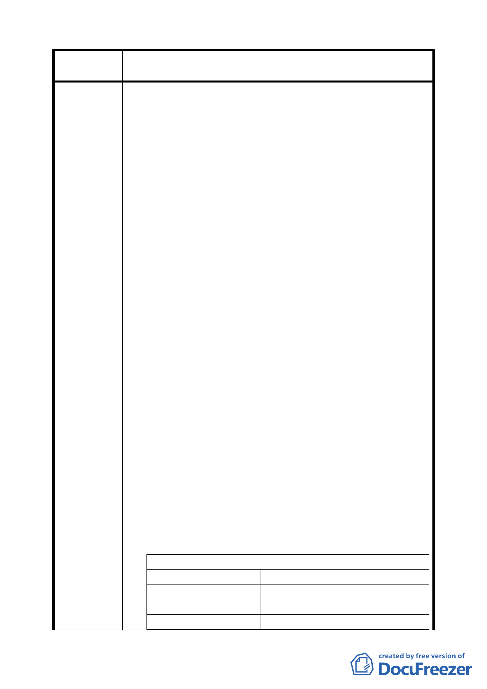

案 名 變更臺北市南港區南港路以南、縱貫鐵路以北南港輪胎工廠
及附近土地工業區為特定專用區主要計畫案
市土地開發勞工權益保護自治條例」。
「台北市土地開發勞工權益保護自治條例」之條文研擬過
程謹慎，由都發局局長親自召集，邀集包括都計、勞工之
學者專家十人及中央地方等政府相關部門，於九十一年十
一月起至九十三年四月，共進行七次會議，經多方折衝協
商後定案，該草案已提送市政會議。
該自治條例重要精神為，事業單位申請都市計畫變更時，
為避免因關廠而造成勞資衝突，應善盡安置員工之社會責
任，故雇主須檢附勞資協議書載明員工安置事項，此安置
計畫書須優於勞基法、經工會或半數員工同意、且須經勞
工局核可。惟於本開發案主要計畫書中，只見南港輪胎公
司表示「南港輪胎工廠廠房老舊、基地面積無法擴展，故
已不敷使用，並已另覓新廠用地」，但卻隻字未提該廠勞
工各項權益保障問題，且該廠仍有三百餘名員工、仍然正
常生產運作，南港輪胎公司此說，迴避勞工權益相關問題
之意圖甚明，居心叵測，更有違上述自治條例之精神。
因應南港地區的繁榮發展，本會不反對該廠區土地作合
理、適度的開發，但在審議開發案的同時，不應漠視在此
處已工作二、三十年勞工的產業人文背景，雖然在龐大開
發利益的考量下，業者吸金與市府捐地都將會是最大的贏
家，但市府站在照顧基層勞工、避免社會成本的浪費與維
護市民的勞動權益上更是責無旁貸的。
四、士林紙業失業勞工殷鑒不遠
以士林紙業士林廠之開發案為例，該公司就所提出開發計
劃書中「社會就業的影響評估」中提出「士紙原有員工中
48.55%住在士林區，本開發除盡量維持原有員工之就業機
會，尚可提供二千個以上的就業機會，有助士林地方的社
會成長」。然事後經士紙工會的訪問調查後發現，士林紙
業士林廠於八十七年十二月關廠後，該公司僅以符合勞基
法之規定發給資遣費，主動終止勞動契約外，並無提供任
何轉業協助，並將製造出之失業問題轉嫁給社會承擔（調
查結果如下表）。
士林紙業士林廠關廠失業勞工調查結果簡表
平均年齡
46.4 歲
平均家庭撫養人口數 2.6 人（81%受訪者為主要負擔家
計者）
單薪收入家庭
74.2%
一九